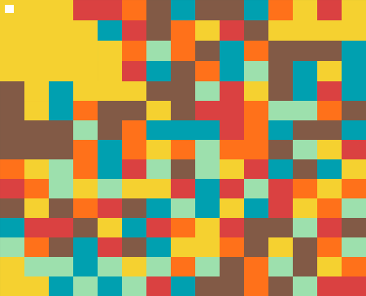
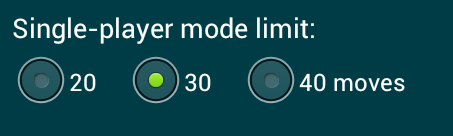
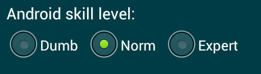
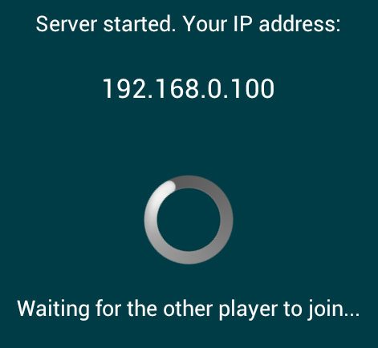

Zyan Drench is a simple yet very entertaining Android game developed using Zyan Communication Framework:
Game board is a random picture of size 15x15. Start from the top-left corner of the board. Select a new color for the top-left pixel, and all adjacent pixels of the same color will be painted over with the new color. The goal is to drench the whole board with your own color. You cannot use the same color twice.
Zyan Drench has several modes: play against Android phone (with adjustable skill level), play solo (classic single-player mode) and network game.
In a single-player mode (classic Drench game) you have 30 steps to drench the board. If you find it too hard or too easy to stay within the limit, you can use settings screen to adjust it.
In a two-player mode there are no limits: the game ends when there are no more pixels to paint over. A player who painted over more pixels wins the game.
The first player always starts from the top-left corner of the board, and the second player takes the opposite corner. On each move, you cannot use your last color or the color of your opponent's corner.
For the sake of usability, the game always displays the board so that your corner is top-left.
This is the most available two-player gaming mode. There are three skill levels of Android player: Dumb, Normal (default skill level) and Expert. Android player is a great way to practice before playing with skilled human gamers.
Choose Start Wifi game from the main menu to start a network game server. The game will display your server's IP address and wait for incoming connections. When your opponent connects to the server, Zyan Drench will display the board and start the game.
To connect to the server, use the Join Wifi game button from the main menu. You'll need to enter the IP address of the game server to join the game.
Please note that Zyan Drench doesn't have a central server and always uses peer-to-peer connections. Take in mind that you can only play with phones on the same Wifi network as your phone.
Have fun!
Regards, yallie